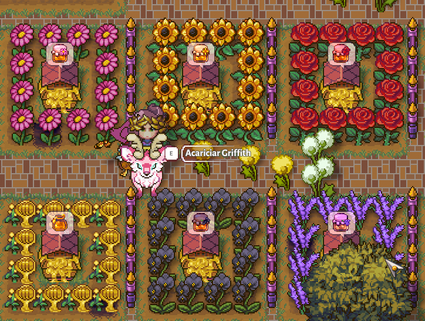

Thayna Bittencourt Baima

Full Stack em Formação
Olá! Muito prazer! Me chamo Thayna e estou em busca de realizar meus sonhos na área da tecnologia.
Sou Bacharel em Direito, atriz a mais de 10 anos, fotógrafa, modelo, maquiadora, cantora e por ultimo, mas não menos importante:
Programadora Full Stack em formação!
Hobbies:
Meu animal favorito é o cavalo! Amo assistir filme ghore, ou do Adam Sandler e principalmente animações, me chame pra maratonar Disney ou Ghibli!
Sou Otaku, dorameira, kpopeira e amo um joguinho de passar fase, se for da nintendo então... Prepare a almofada. Se for a distância junte-se ao meu rancho em Sun Haven!
